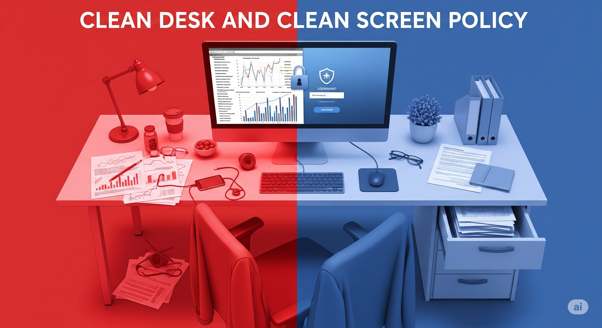
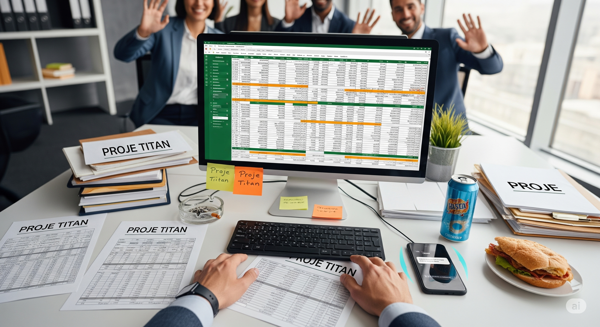
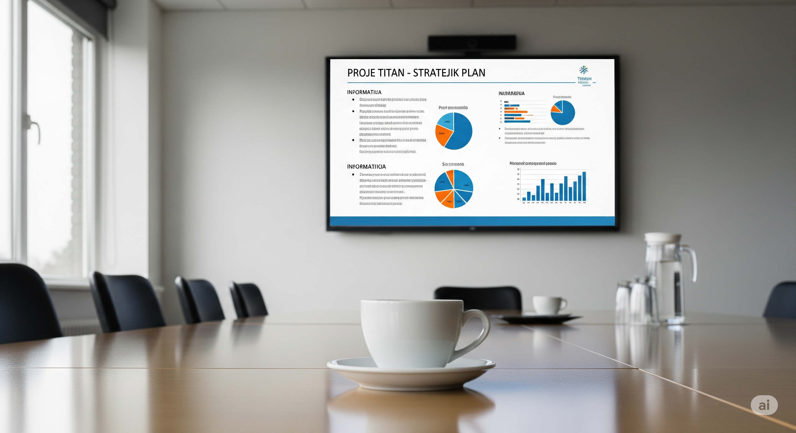

In this simulation, you will learn the importance of the "Clean Desk and Clean
Screen" policy by experiencing it. How can a small vulnerability you leave unknowingly in your daily
work pace turn into a big risk for the company? Your decisions will demonstrate your adherence to ISO
27001 standards and your security awareness in the physical environment.

Key Metrics
Desk SecuritySecure storage of physical documents.
Screen SecurityProtection of digital information on screen.
ISO 27001 ComplianceAdherence to Clean Desk/Screen policy.
Data Leak RiskPossibility of sensitive data exposure.
Desk Security
100
Screen Security
100
ISO 27001 Compliance
100
Data Leak Risk
0
Time Remaining
10:00
Simulation Completed: Evaluation Report
You have successfully completed the simulation. Below is the analysis of your decisions regarding
adherence to Clean Desk and Clean Screen policies.
Decision Timeline
Lessons Learned
Score Breakdown
Stage 1: Lunch Rush
It's 12:30 and your friends are waiting for you for lunch. On your desk, there are printouts and
handwritten notes about a highly confidential merger & acquisition project called "Project Titan".
An Excel spreadsheet containing the project's financial data is open on your computer screen.

You need to go to lunch quickly. What do you do?
Stage 2: Forgetfulness at the Printer
You sent a 10-page summary of "Project Titan" to the printer. When you go down to the floor where the
printer is located, an urgent call comes in and you need to make a 10-minute important call. The
printouts are waiting for you in the printer tray.
How do you proceed in this situation?
Stage 3: Unexpected Visitors
While working on "Project Titan" documents at your desk, a maintenance team wearing uniforms with the
logo of an external service company, whom you haven't seen before, enters your office floor. They
start walking around desks to check the air conditioners.
What do you do in this situation?
Stage 4: Meeting Room Break
You are having a meeting with your team on "Project Titan". All strategic details, financial targets,
and risk analyses of the project are projected on the big screen in the meeting room. A 5-minute
coffee break is given for the meeting and everyone leaves the room.

You are the last one to leave the room. What do you do?
Stage 5: Whiteboard Danger
Your meeting is over and everyone has left the room. However, the whiteboard you used during the
meeting is full of diagrams and notes containing the entire roadmap, key personnel names, and
potential acquisition figures of "Project Titan".
What is the correct behavior in this situation?
Stage 6: End of Day Fatigue
It's getting late, you had a tiring day and you want to go home as soon as possible. On your desk,
"Project Titan" notes, doodles, and one or two official documents you used throughout the day are
lying around. Your computer is still on.
How do you fulfill your last duty with this fatigue?
Stage 7: Security Audit
The next morning, you receive an email from the Information Security Manager (CISO): "Dear Employees,
an unannounced 'Clean Desk & Clean Screen' audit was conducted in our offices last night.
Unfortunately, serious vulnerabilities where sensitive information could be accessed were detected
on many desks and in meeting rooms. This simulation reflects the situations detected at your desk
and areas you are responsible for during last night's audit."